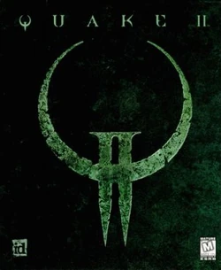

I am a Linux user, who uses Linux From Scratch as my Distro of choice. LFS is a project where you build and compile your own Linux distro from source code
I also enjoy video games. One of my favorite games of all time is Quake II.

Description of Quake II:
Mankind is at war with the Strogg, a hostile alien race that attacked Earth.
In response, humanity launched a strike on the Strogg homeworld...it failed, but you survived.
Outnumbered and outgunned, fight your way through fortified military installations and
shut down the enemy's war machine. Only then will the fate of humanity be known.